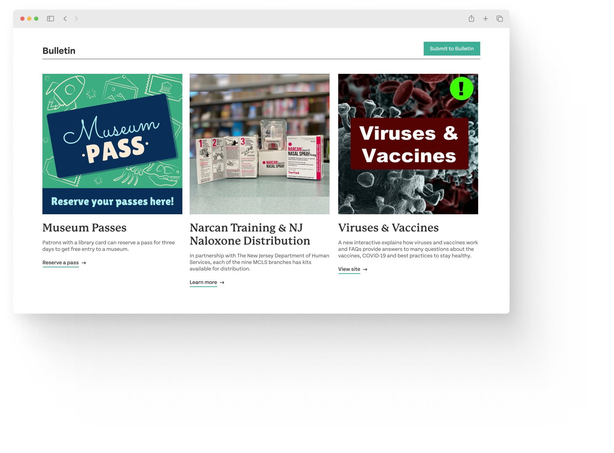

Bringing Mercer County Library into the modern age.
UX Design • Responsive Design • Web
TIMELINE
Oct 2022
2 weeks
ROLE
UI/UX Designer
Visual Designer
Context
The main goal of this project was to redesign a website to accommodate all screen sizes from desktop,
to tablet, to mobile. I chose to redesign the home page for Mercer County Library System,
the local library I grew up with. As news and media content shift away from print, it will
be increasingly important for libraries to establish a solid digital presence to stay
relevant in the modern age. My redesign of their website, which is outdated and hard to use,
aims to bolster community engagement with the library and improve public access to the
library’s events, resources, and services.
Research
IDENTIFYING USABILITY PROBLEMS
I began my design process by identifying problems with the site’s usability,
which I broke down into three dimensions:
- Learnability - Is it easy for new users to learn?
- Memorability - Is it easy for casual users to recall what to do?
- Efficiency - Can frequent users accomplish typical tasks quickly?
The most usable interfaces answer yes to these questions. I began this process by performing a
quick walkthrough of the existing web page, jotting down any thoughts, concerns, or questions I
had as they arose.

At a glance, the webpage was cluttered and unpolished, and I found it difficult to find and perform
specific actions on the page. I then dove into a detailed analysis of the website’s usability,
keeping in mind the three dimensions as well as the conceptual models that the interface uses
and how they compare to the typical user’s mental models. I synthesized my findings into a few key problems:
üóëÔ∏è Visual clutter & information overload
Users may be overwhelmed by the large amount of information on the page,
particularly the Resources and Services sections which have many categories.
ℹ️ Lack of contextual information
The Resources, Services, and Catalog sections lay out all of the available options
without providing any context as to what they’re about or how to start using them.
üóÇÔ∏è Unorganized IA / content strategy
Irrelevant or auxiliary information gets more priority than it likely should.
The user’s mental model might not align with the current structure of content,
so they’re not finding the answers they want when they want.
üß≠ Navigational inefficiency
Many of the typical tasks one would perform, such as searching the library catalog,
registering and looking for information about events, reserving and renewing books,
and applying for a library card are hard to find or complete quickly.
ACCESSIBILITY
After identifying usability problems, I also used WebAIM WAVE to detect issues
with accessibility. These were the most significant issues it found:
-
Many images have null or empty alternative text.
I agree that this could be an issue, as alt text makes
it easier for those using a screen reader to navigate the site.
-
Many very low contrast errors.
I would disagree here. From my own observations, I didn’t notice too many
apparent contrast errors, except for the hover states of the digital collection
titles in the catalog section. Also, it seems like the contrast errors they found
did not compare the correct foreground and background colors, creating errors that
didn’t exist.
-
ARIA Hidden tags.
Content with these tags were hidden with ARIA and not presented to screen reader users.
I noticed that these tags generally only applied to the social media buttons, so users
with screen readers might not be able to interact with or navigate to the library’s
social media channels. However, I don’t think this is a huge area of concern.
-
Redundant text titles and noscript elements.
WAVE recommended either removing or modifying the title attribute to provide advisory,
not redundant information. This doesn’t seem too concerning in terms of accessibility.
The noscript elements might not be accessible to users that have disabled scripts, but
since most people do have them enabled, I don’t think this presents a huge accessibility
issue either.
Ultimately, WebAIM WAVE didn't reveal too many accessibility issues that I could address through
my redesign of the interface, other than contrast errors.
Visual Redesign
LOW-FIDELITY WIREFRAMES
To address these issues, I started by brainstorming solutions and sketching out
low-fidelity wireframes to let me ideate quickly and freely. I also wireframed the page
across a range of screen sizes to implement responsiveness in my design.
VISUAL DESIGN STYLE GUIDE
I then created a visual design style guide that documents the main colors, typography, and reusable
components’ different states in order to establish a consistent visual identity and facilitate
development.
Final Designs
I finally translated my low-fidelity wireframes into high-fidelity prototypes in Figma using the colors,
typography, and components from my visual design style guide. Here are the main highlights of the final redesign:
ℹ️ Lack of contextual information
üóëÔ∏è Visual clutter & information overload
The current Resources, Services, and Catalog sections lay out all of the available options
without providing any context as to what they’re about or how to start using them. Not only does this design
take up a lot of space, but also it is confusing for users to interact with.
My redesign groups these similar sections into an "Explore" section for better organization and ease of navigation.
I reallocated unnecessary clutter in these sections to reduce information overload and
added a brief description of each so users know what they can use them for and CTAs to visit those pages for more details.

üóÇÔ∏è Unorganized IA / content strategy
In the current site, the first three cards under the header aren't organized, clear, or consistent
in theme or style, and it's not immediately clear whether they are events, resources, or something else entirely.
To address this issue, I added a "Bulletin" section to create a designated place for notices and community information.
Furthermore, I added a "Submit to Bulletin" CTA that allows users to submit their own notices and resources to the Bulletin in order to
encourage greater community engagement.
Responsive Redesign
Finally, I recreated my high-fidelity prototypes using HTML and CSS to build
Mercer County Library’s redesigned and responsive home page. Given the scope of this project, I used mostly dummy elements to replace navigational elements,
links, and buttons. Moving forward, I hope to incorporate Flexbox and CSS's other layout tools more in my future designs.
Conclusion & Learnings
Looking back on my childhood, my local library played an integral role in my early education. I took on this project not only because
I thought their website could be improved, but also because I wanted to find a way to give back to an institution that shaped my formative years.
One of the biggest challenges of this project was designing for responsiveness. Understanding the value of responsiveness in providing a
more user-friendly experience across all devices as well as the constraints of development made me a lot more intentional
about the way I approached my designs.